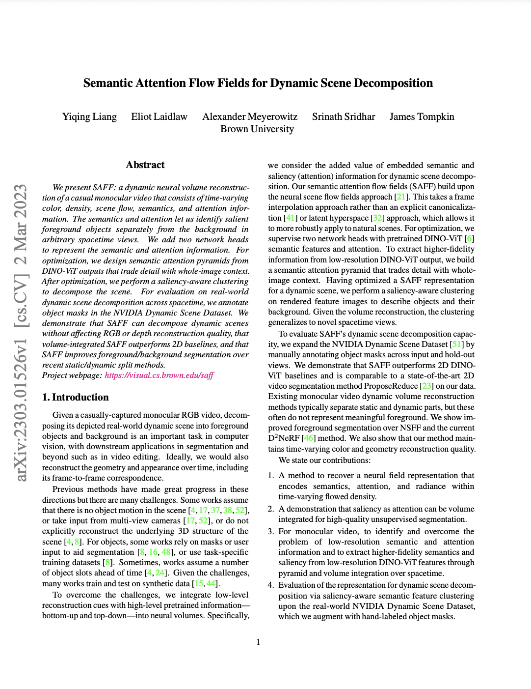

Semantic Attention Flow Fields for
Monocular Dynamic Scene Decomposition
ICCV 2023

| Input video | RGB (novel spacetime) |
| Decomposition (novel spacetime) | Foreground (novel spacetime) |
Abstract
We present SAFF: a dynamic neural volume reconstruction of a casual monocular video that consists of time-varying color, density, scene flow, semantics, and attention information. The semantics and attention let us identify salient foreground objects separately from the background in arbitrary spacetime views. We add two network heads to represent the semantic and attention information. For optimization, we design semantic attention pyramids from DINO-ViT outputs that trade detail with whole-image context. After optimization, we perform a saliency-aware clustering to decompose the scene. For evaluation on real-world dynamic scene decomposition across spacetime, we annotate object masks in the NVIDIA Dynamic Scene Dataset. We demonstrate that SAFF can decompose dynamic scenes without affecting RGB or depth reconstruction quality, that volume-integrated SAFF outperforms 2D baselines, and that SAFF improves foreground/background segmentation over recent static/dynamic split methods.

|

|

|
Bibtex |
Presentation
Supplemental video results
Note: This page has 100+ videos. Each set of results will show/hide through a button to ease the burden on the browser.
Index
Key aspects of our method 🔝
Pyramid feature extraction
Semantic and saliency quality improves with our pyramid feature extraction approach.
Balloon NBoard sequence below shows low resolution raw semantics and saliency from DINO-ViT and our higher resolution versions on the right. Note: Features have been projected via PCA and so some color variation is expected; colors are not directly comparable.
Feature volume integration
Semantic and saliency quality improves further through volume integration.
Balloon NBoard sequence below shows the semantic and saliency input to the optimization process with the rendered output after optimization.
Saliency-aware clustering
Saliency-aware clustering improves decomposition.
DynamicFace sequence below shows the clustering results before saliency voting and before cluster merging.